Before I start putting the bike back I need to make sure the internals aren't too worn or have issues that will require me to tear into the engine again. To ensure the crankshaft bearings are properly lubicated it's important there is a gap between the crankshaft journal and its bearing. The factory specifies 0.020 -> 0.044mm.
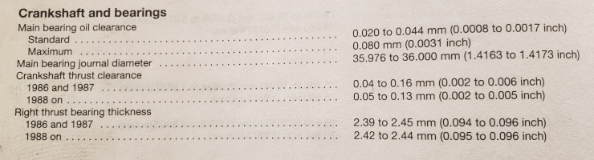Measuring the oil clearance is easies done with a Plastigage which is a Wax string you lay on the Journals, mount and torque down it's mating part, dismantle and observe how far the Plastigage has squeezed, the width of the squeezed Plastigage is a measurement of the clearance between the 2 mating surfaces. In the picture below the thin green strip of Plastigage is resting on the main bearing Journals, assemble the 2 crankcase halves and torque the main bearing bolts to spec. then disassemble and observe the squeeze.
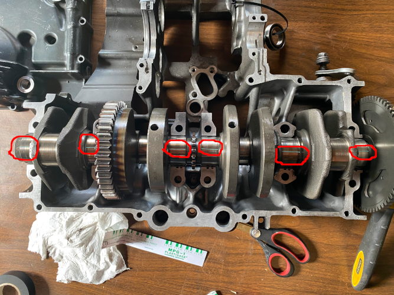 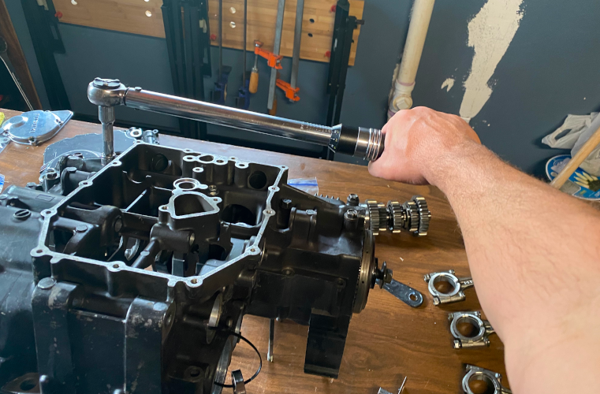Below are the results from main bearing #1-6, click on them to zoom.
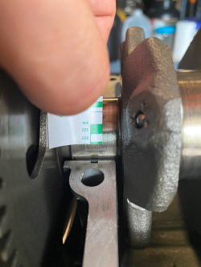 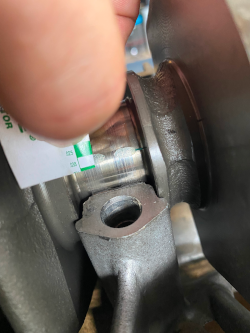 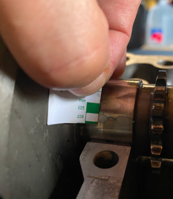 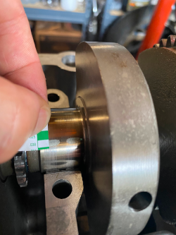 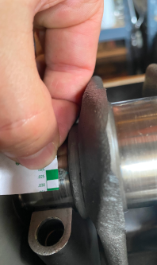 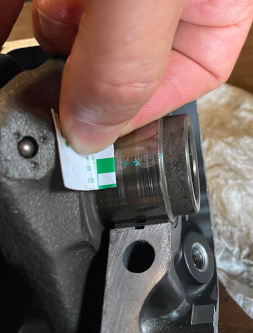
A few of the Journals had grooves that would catch a finger nail when running perpendicular to the direction, these grooves can be taken down by a piece of emerald paper of a high grid count, wrapped around the Journal so it fits exactly one time around, then wrap a long shoelace around the paper and perform a light back-and-forth sanding. The Journals are hardened and the paper will not remove any material, it'll just knock down the grooves.
| Bearing #1 | Bearing #2 | Bearing #3 | Bearing #4 | Bearing #5 | Bearing #6 | Specs | |
|---|---|---|---|---|---|---|---|
| Max | 1.4166 | 1.4166 | 1.4167 | 1.4165 | 1.4165 | 1.4166 | 1.4173 |
| Min | 1.4163 | 1.4163 | 1.4165 | 1.4165 | 1.4165 | 1.4163 | 1.4163 |
Next is the diameter of the Connecting Rod Journal diameter (Bearing where the connecting rod connects to the crank)
I didn't take any pictures but the procedure it the same as for the main bearings.
| Pin #1 | Pin #2 | Pin #3 | Pin #4 | Specs | |
|---|---|---|---|---|---|
| Max | 1.4956 | 1.4955 | 1.4956 | 1.4955 | 1.4961 |
| Min | 1.4955 | 1.4955 | 1.4955 | 1.4955 | 1.4951 |
Piston diameter is checked, this is hard as the diameter varies from top to bottom, the manual say to measure at a certain area on the piston, but even this area can read above and below the spec so I'm not confident th numbers below are accurate.
This measurement indicates that the #1 piston is below minimum diameter, and the rest are a 1/10,000" larger than the maximum diameter allowed (2.9899") so I'll re-visit this before assembly.
| Piston #1 | Piston #2 | Piston #3 | Piston #4 | Specs | |
|---|---|---|---|---|---|
| Max | 2.9885 | 2.99 | 2.99 | 2.99 | 2.9899 |
| Min | 2.9894 |
Next measurement is the cylinder bore, this is done like the journal measuring in a X-pattern to also gauge if the cylinder is out-of-round, and I measure towards the top and the bottom of the cylinder. To measure the diameter was done by setting the micrometer to the max allowed diameter, then zero the bore gauge to that diameter (2.9947") and when lowering the bore gauge into the cylinder - the dial will show the difference between the zero'ed value and the cylinder diameter.
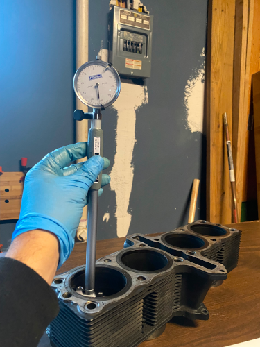 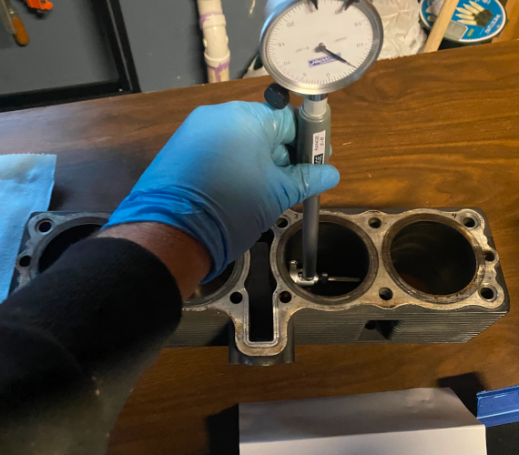 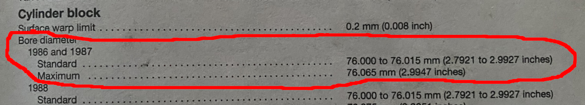| Cylinder #1 | Cylinder #2 | Cylinder #3 | Cylinder #4 | Specs | |
|---|---|---|---|---|---|
| Top Max | 2.9942 | 2.9940 | 2.9940 | 2.9942 | 2.9947 |
| Top Min | 2.9937 | 2.9937 | 2.9937 | 2.9935 | |
| Bottom Max | 2.9937 | 2.9939 | 2.9937 | 2.9939 | 2.9947 |
| Bottom Min | 2.9929 | 2.9932 | 2.9932 | 2.9932 |